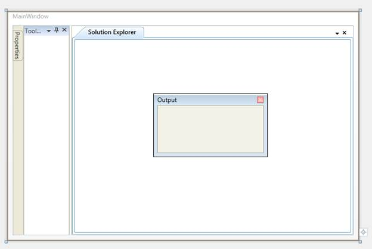

The child elements of the Docking Manager control can be customized in five different states.
· Dock
· Document
· Float
· Auto Hidden
· Hidden
The State property of DockingManager is used to set the states for the child elements of the Docking Manager control. The following code example illustrates how to set the states for the child elements.
|
[XAML]
<syncfusion:DockingManager x:Name="dockingManager1" UseDocumentContainer="True"> <ContentControl syncfusion:DockingManager.Header="Tool Box" syncfusion:DockingManager.State="Dock"/> <ContentControl syncfusion:DockingManager.Header="Solution Explorer" syncfusion:DockingManager.State="Document"/> <ContentControl syncfusion:DockingManager.Header="Properties" syncfusion:DockingManager.State="AutoHidden" /> <ContentControl syncfusion:DockingManager.Header="Output" syncfusion:DockingManager.State="Float" /> <ContentControl syncfusion:DockingManager.Header="Error" syncfusion:DockingManager.State="Hidden" /> </syncfusion:DockingManager>
|
|
[C#] DockingManager.SetState(ctrl, DockState.Dock); DockingManager.SetState(ctrl1, DockState.Document); DockingManager.SetState(ctrl2, DockState.Float); DockingManager.SetState(ctrl3, DockState.AutoHidden); DockingManager.SetState(ctrl4, DockState.Hidden);
|
This will generate the following Docking Manager control.

Figure 305: Docking Manager control with different dock states